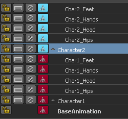

如果场景中的两个角色交互密切，则该工作流将十分有用。您可能需要同时为两个角色设置关键帧，但还需要分别组织关键帧，使其更容易返回且更易于分别调整。
如果某角色十分复杂，包含许多自定义控件和身体部位，则可使用类似的工作流。例如，如果角色的每个手指均具有自定义控件，则可在单独层上为每个控件设置动画。
为单独层上的两个角色设置关键帧
- 加载要设置关键帧的两个角色
- 双击
 以创建两个空的动画层。（另请参见创建动画层。）
以创建两个空的动画层。（另请参见创建动画层。）
默认情况下，这些层将命名为 AnimLayer1 和 AnimLayer2。您将使用这两个空层作为父对象来组织两个层的层次（一个角色一个层次）。
- 将两个空层重命名为“Character1”和“Character2”。
- 选择第一个角色的髋部，并单击
 以创建动画层。将该层重命名为“Char1_Hips”。
以创建动画层。将该层重命名为“Char1_Hips”。
默认情况下，所有髋部属性均已添加到层。另请参见将属性添加到动画层和从动画层移除属性。
- 按住鼠标中键的同时将父项拖动到 Char1_Hips 层，使其成为 Character1 父层。
- 继续为第一个角色的每个部位创建单独的动画层，并将它们全部设置为 Character1 层的父对象。（例如，可以为角色的手和脚等创建单独的层。）
- 重复步骤 4 至步骤 6，为第二个角色创建层层次。

现在，已设置两个层层次，可以选择两个角色的髋部并同时为它们设置关键帧。每个角色的关键帧均会在其单独的层中自动设置。（另请参见设定动画层上的对象的关键帧。）
提示：建议的该工作流的设置关键帧模式为混合。有关设置关键帧模式的详细信息，请参考“动画层编辑器”(Animation Layer Editor)菜单栏主题中的选项(Options)菜单。
- 选择两个角色的髋部。
请注意，Char1_Hips 和 Char2_Hips 层均显示为绿色“指示灯”
 。这指示两个层均处于活动状态，并且将在您设置关键帧时接收关键帧。
。这指示两个层均处于活动状态，并且将在您设置关键帧时接收关键帧。
- 选择第一个角色的髋部。请注意，“时间滑块”(Time Slider)中仅会显示该角色的关键帧。
使两个角色的关键帧动画保持在单独的层层次中可组织您的工作，便于稍后识别并编辑每个角色的关键帧。此工作流可以帮助您跟踪两个角色的关键帧。